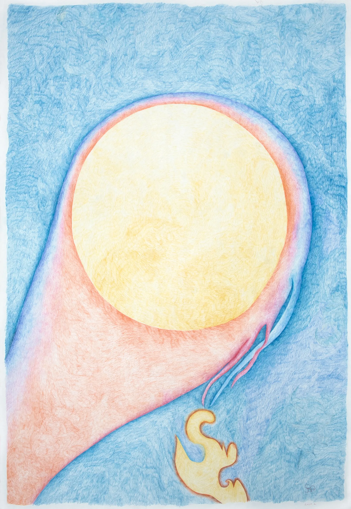

CREATURE stage I
from Nowelia Kiliani Series
wax-based colored pencils on cotton paper
100 x 70 cm
2021
The project Nowelia Kiliani emerged from a personal experience and reinterpretation of the feedback phenomenon, originally associated with electronic audiovisual media but present in every aspect of our planet’s functioning.
The series of works comprising Nowelia Kiliani developed during a period of my psychoanalysis, as an attempt to translate a technical process of feedback into a practice of introspection and inner inquiry. The process began with the observation of feedback in audio-video devices, and gradually shifted toward the observation of my own body, the flow of thoughts, reinterpretation of meanings, and note-taking. In the final stage, these elements were composed into visual forms that most accurately represent internal states. Over time, the forms became increasingly complex, taking on specific characteristics. Throughout the process I recognised the evolution of a new form, which I called the Being and named Nowelia Kiliani. As an accompaniment to the visual works, I created a sound piece - a welcome song for the Being that emerged through this process.
.
